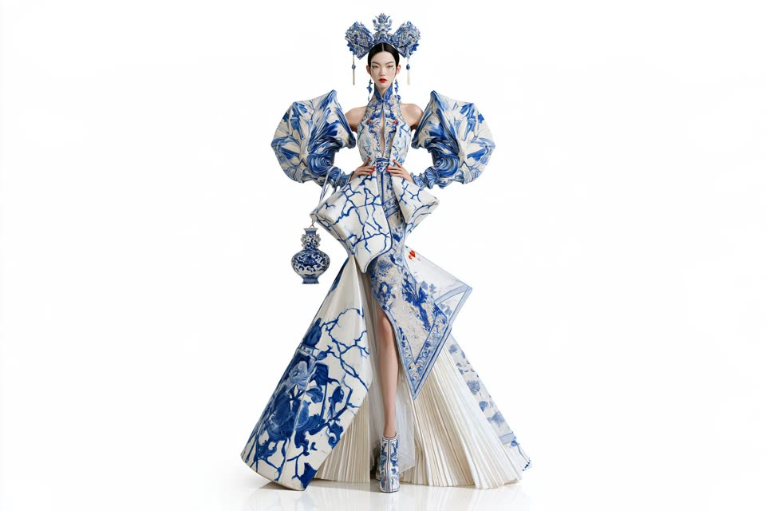

Surrealist haute couture illustration template with [theme] and three colour slots (model unknown)
WRD-105Wardrobeunknownby @azed_ai2026-11-25

A fill-in-the-blanks fashion illustration prompt: deconstructed silhouette, 3D embroidery, organza and velvet, themed headpiece and handbag on white. The four images show Delft porcelain, clockwork and other themes. Useful for costume and campaign moodboards.
Prompt
A full-body fashion illustration of one elegant model wearing a [theme]-inspired surrealist haute couture gown, avant-garde deconstructivist silhouette, sculptural tailoring, intricate 3D embroidery, layered velvet, translucent organza, pleated silk, elaborate [theme]-inspired headpiece, artistic handbag, flowing architectural forms, sophisticated [color1] and [color2] palette with [color3] accents, refined fashion illustration, dreamy editorial aesthetic, clean white background, 4K
Tags: fashion illustration, haute couture, template, [theme], headpiece, moodboard